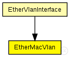
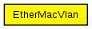

This documentation is released under the Creative Commons license
This documentation is released under the Creative Commons licenseTODO auto-generated module
The following diagram shows usage relationships between types. Unresolved types are missing from the diagram. 
The following diagram shows inheritance relationships for this type. Unresolved types are missing from the diagram. 
If a module type shows up more than once, that means it has been defined in more than one NED file.
| EtherVlanInterface (compound module) |
TODO auto-generated module |
| Name | Type | Default value | Description |
|---|---|---|---|
| promiscuous | bool | true |
ALWAYS TRUE... LLC Will take care... |
| address | string | "auto" |
MAC address as hex string (12 hex digits), or "auto". "auto" values will be replaced by a generated MAC address in init stage 0. |
| txrate | double | 100Mbps |
maximum data rate supported by this station (bit/s); actually chosen speed may be lower due to auto- configuration. 0 means fully auto-configured. |
| duplexEnabled | bool | true |
whether duplex mode can be enabled or not; whether MAC will actually use duplex mode depends on the result of the auto-configuration process (duplex is only possible with DTE-to-DTE connection). |
| txQueueLimit | int | 1000 |
maximum number of frames queued up for transmission; additional frames are dropped. Only used if queueModule=="" |
| queueModule | string | "" |
name of optional external queue module |
| mtu | int | 1500 |
| Name | Value | Description |
|---|---|---|
| display | i=block/rxtx |
| Name | Direction | Size | Description |
|---|---|---|---|
| upperLayerIn | input |
to EtherLLC or MACRelayUnitPP |
|
| upperLayerOut | output |
to EtherLLC or MACRelayUnitPP |
|
| phys | inout |
to physical layer or the network |
// // TODO auto-generated module // simple EtherMacVlan { parameters: @display("i=block/rxtx"); bool promiscuous = default(true); // ALWAYS TRUE... LLC Will take care... string address = default("auto"); // MAC address as hex string (12 hex digits), or // "auto". "auto" values will be replaced by // a generated MAC address in init stage 0. double txrate @unit("bps") = default(100Mbps); // maximum data rate supported by this station (bit/s); // actually chosen speed may be lower due to auto- // configuration. 0 means fully auto-configured. bool duplexEnabled = default(true); // whether duplex mode can be enabled or not; whether // MAC will actually use duplex mode depends on the result // of the auto-configuration process (duplex is only // possible with DTE-to-DTE connection). int txQueueLimit = default(1000); // maximum number of frames queued up for transmission; // additional frames are dropped. Only used if queueModule=="" string queueModule = default(""); // name of optional external queue module int mtu = default(1500); gates: input upperLayerIn; // to EtherLLC or MACRelayUnitPP output upperLayerOut; // to EtherLLC or MACRelayUnitPP inout phys @labels(ether); // to physical layer or the network }
This documentation is released under the Creative Commons license